16 Charts: bars and ranges
Strip charts drawing one item per level of a categorical axis: a bar of a summary (bar), an interval with its centre (extent) and a bullet - a measure over qualitative ranges with markers (bullet). Each chart lists the mapping keys it reads, its own options and the shared option groups it takes.
(ns reference.charts-bars-ranges
(:require [fastmath.random :as r]
[cljplot2.chart :as chart]
[cljplot2.core :as plot]
[cljplot2.data.levels :as levels]
[cljplot2.describe :as describe]
[fastmath.stats :as stats]
[notebook-utils :as nu]))Data: Edgar Anderson’s iris measurements, R datasets package iris (Anderson 1935; Fisher 1936); licence: Part of R (GPL-2 | GPL-3).
(def iris (nu/dataset :iris))| sepal-length | sepal-width | petal-length | petal-width | species |
|---|---|---|---|---|
| 5.1 | 3.5 | 1.4 | 0.2 | setosa |
| 4.9 | 3 | 1.4 | 0.2 | setosa |
| 4.7 | 3.2 | 1.3 | 0.2 | setosa |
| 4.6 | 3.1 | 1.5 | 0.2 | setosa |
| 5 | 3.6 | 1.4 | 0.2 | setosa |
| 5.4 | 3.9 | 1.7 | 0.4 | setosa |
| 4.6 | 3.4 | 1.4 | 0.3 | setosa |
| 5 | 3.4 | 1.5 | 0.2 | setosa |
| 4.4 | 2.9 | 1.4 | 0.2 | setosa |
| 4.9 | 3.1 | 1.5 | 0.1 | setosa |
| 5.4 | 3.7 | 1.5 | 0.2 | setosa |
| 4.8 | 3.4 | 1.6 | 0.2 | setosa |
| 4.8 | 3 | 1.4 | 0.1 | setosa |
| 4.3 | 3 | 1.1 | 0.1 | setosa |
| 5.8 | 4 | 1.2 | 0.2 | setosa |
| 5.7 | 4.4 | 1.5 | 0.4 | setosa |
| 5.4 | 3.9 | 1.3 | 0.4 | setosa |
| 5.1 | 3.5 | 1.4 | 0.3 | setosa |
| 5.7 | 3.8 | 1.7 | 0.3 | setosa |
| 5.1 | 3.8 | 1.5 | 0.3 | setosa |
| 5.4 | 3.4 | 1.7 | 0.2 | setosa |
| 5.1 | 3.7 | 1.5 | 0.4 | setosa |
| 4.6 | 3.6 | 1 | 0.2 | setosa |
| 5.1 | 3.3 | 1.7 | 0.5 | setosa |
| 4.8 | 3.4 | 1.9 | 0.2 | setosa |
| 5 | 3 | 1.6 | 0.2 | setosa |
| 5 | 3.4 | 1.6 | 0.4 | setosa |
| 5.2 | 3.5 | 1.5 | 0.2 | setosa |
| 5.2 | 3.4 | 1.4 | 0.2 | setosa |
| 4.7 | 3.2 | 1.6 | 0.2 | setosa |
| 4.8 | 3.1 | 1.6 | 0.2 | setosa |
| 5.4 | 3.4 | 1.5 | 0.4 | setosa |
| 5.2 | 4.1 | 1.5 | 0.1 | setosa |
| 5.5 | 4.2 | 1.4 | 0.2 | setosa |
| 4.9 | 3.1 | 1.5 | 0.2 | setosa |
| 5 | 3.2 | 1.2 | 0.2 | setosa |
| 5.5 | 3.5 | 1.3 | 0.2 | setosa |
| 4.9 | 3.6 | 1.4 | 0.1 | setosa |
| 4.4 | 3 | 1.3 | 0.2 | setosa |
| 5.1 | 3.4 | 1.5 | 0.2 | setosa |
| 5 | 3.5 | 1.3 | 0.3 | setosa |
| 4.5 | 2.3 | 1.3 | 0.3 | setosa |
| 4.4 | 3.2 | 1.3 | 0.2 | setosa |
| 5 | 3.5 | 1.6 | 0.6 | setosa |
| 5.1 | 3.8 | 1.9 | 0.4 | setosa |
| 4.8 | 3 | 1.4 | 0.3 | setosa |
| 5.1 | 3.8 | 1.6 | 0.2 | setosa |
| 4.6 | 3.2 | 1.4 | 0.2 | setosa |
| 5.3 | 3.7 | 1.5 | 0.2 | setosa |
| 5 | 3.3 | 1.4 | 0.2 | setosa |
| 7 | 3.2 | 4.7 | 1.4 | versicolor |
| 6.4 | 3.2 | 4.5 | 1.5 | versicolor |
| 6.9 | 3.1 | 4.9 | 1.5 | versicolor |
| 5.5 | 2.3 | 4 | 1.3 | versicolor |
| 6.5 | 2.8 | 4.6 | 1.5 | versicolor |
| 5.7 | 2.8 | 4.5 | 1.3 | versicolor |
| 6.3 | 3.3 | 4.7 | 1.6 | versicolor |
| 4.9 | 2.4 | 3.3 | 1 | versicolor |
| 6.6 | 2.9 | 4.6 | 1.3 | versicolor |
| 5.2 | 2.7 | 3.9 | 1.4 | versicolor |
| 5 | 2 | 3.5 | 1 | versicolor |
| 5.9 | 3 | 4.2 | 1.5 | versicolor |
| 6 | 2.2 | 4 | 1 | versicolor |
| 6.1 | 2.9 | 4.7 | 1.4 | versicolor |
| 5.6 | 2.9 | 3.6 | 1.3 | versicolor |
| 6.7 | 3.1 | 4.4 | 1.4 | versicolor |
| 5.6 | 3 | 4.5 | 1.5 | versicolor |
| 5.8 | 2.7 | 4.1 | 1 | versicolor |
| 6.2 | 2.2 | 4.5 | 1.5 | versicolor |
| 5.6 | 2.5 | 3.9 | 1.1 | versicolor |
| 5.9 | 3.2 | 4.8 | 1.8 | versicolor |
| 6.1 | 2.8 | 4 | 1.3 | versicolor |
| 6.3 | 2.5 | 4.9 | 1.5 | versicolor |
| 6.1 | 2.8 | 4.7 | 1.2 | versicolor |
| 6.4 | 2.9 | 4.3 | 1.3 | versicolor |
| 6.6 | 3 | 4.4 | 1.4 | versicolor |
| 6.8 | 2.8 | 4.8 | 1.4 | versicolor |
| 6.7 | 3 | 5 | 1.7 | versicolor |
| 6 | 2.9 | 4.5 | 1.5 | versicolor |
| 5.7 | 2.6 | 3.5 | 1 | versicolor |
| 5.5 | 2.4 | 3.8 | 1.1 | versicolor |
| 5.5 | 2.4 | 3.7 | 1 | versicolor |
| 5.8 | 2.7 | 3.9 | 1.2 | versicolor |
| 6 | 2.7 | 5.1 | 1.6 | versicolor |
| 5.4 | 3 | 4.5 | 1.5 | versicolor |
| 6 | 3.4 | 4.5 | 1.6 | versicolor |
| 6.7 | 3.1 | 4.7 | 1.5 | versicolor |
| 6.3 | 2.3 | 4.4 | 1.3 | versicolor |
| 5.6 | 3 | 4.1 | 1.3 | versicolor |
| 5.5 | 2.5 | 4 | 1.3 | versicolor |
| 5.5 | 2.6 | 4.4 | 1.2 | versicolor |
| 6.1 | 3 | 4.6 | 1.4 | versicolor |
| 5.8 | 2.6 | 4 | 1.2 | versicolor |
| 5 | 2.3 | 3.3 | 1 | versicolor |
| 5.6 | 2.7 | 4.2 | 1.3 | versicolor |
| 5.7 | 3 | 4.2 | 1.2 | versicolor |
| 5.7 | 2.9 | 4.2 | 1.3 | versicolor |
| 6.2 | 2.9 | 4.3 | 1.3 | versicolor |
| 5.1 | 2.5 | 3 | 1.1 | versicolor |
| 5.7 | 2.8 | 4.1 | 1.3 | versicolor |
| … | … | … | … | … |
(def sales (for [[qi q] (map-indexed vector ["Q1" "Q2" "Q3" "Q4"]) [i product] (map-indexed vector ["apples" "pears" "plums"])]
{:quarter q :product product :amount (+ 10 (* 6 i) (* 8 qi) (mod (* 7 (+ qi (* 2 i))) 11))}))| quarter | product | amount |
|---|---|---|
| Q1 | apples | 10 |
| Q1 | pears | 19 |
| Q1 | plums | 28 |
| Q2 | apples | 25 |
| Q2 | pears | 34 |
| Q2 | plums | 32 |
| Q3 | apples | 29 |
| Q3 | pears | 38 |
| Q3 | plums | 47 |
| Q4 | apples | 44 |
| Q4 | pears | 42 |
| Q4 | plums | 51 |
Data: Motor Trend car road tests (1974), R datasets package mtcars (Henderson & Velleman 1981); licence: Part of R (GPL-2 | GPL-3).
(def mtcars-cyl (map #(select-keys % [:model :cyl]) (nu/dataset :mtcars)))| model | cyl |
|---|---|
| Mazda RX4 | 6 |
| Mazda RX4 Wag | 6 |
| Datsun 710 | 4 |
| Hornet 4 Drive | 6 |
| Hornet Sportabout | 8 |
| Valiant | 6 |
| Duster 360 | 8 |
| Merc 240D | 4 |
| Merc 230 | 4 |
| Merc 280 | 6 |
| Merc 280C | 6 |
| Merc 450SE | 8 |
| Merc 450SL | 8 |
| Merc 450SLC | 8 |
| Cadillac Fleetwood | 8 |
| Lincoln Continental | 8 |
| Chrysler Imperial | 8 |
| Fiat 128 | 4 |
| Honda Civic | 4 |
| Toyota Corolla | 4 |
| Toyota Corona | 4 |
| Dodge Challenger | 8 |
| AMC Javelin | 8 |
| Camaro Z28 | 8 |
| Pontiac Firebird | 8 |
| Fiat X1-9 | 4 |
| Porsche 914-2 | 4 |
| Lotus Europa | 4 |
| Ford Pantera L | 8 |
| Ferrari Dino | 6 |
| Maserati Bora | 8 |
| Volvo 142E | 4 |
16.1 bar
A bar per level (and group) whose length summarises the item’s rows - their sum by default, or a count of them; vertical bars take the levels on x, horizontal ones on y.
| Option | Type | Default | Description |
|---|---|---|---|
| :x | a keyword, a function or a categorical marker of one or nil | x position: the levels (categorical) of vertical bars or the values of horizontal ones | |
| :y | a keyword, a function or a categorical marker of one or nil | y position: the values of vertical bars or the levels (categorical) of horizontal ones | |
| :color | a keyword, a function or a categorical marker of one or nil | fill colour per group (gives legend keys) | |
| :pattern | a keyword, a function or a categorical marker of one or nil | fill pattern per group (gives legend keys) | |
| :group | a keyword, a function or a categorical marker of one or nil | groups without a visual aesthetic (dodged, stacked or mirrored as other groups) |
(plot/render-image {:data sales
:mapping {:x :quarter :y :amount :color :product}
:charts [(chart/bar)]
:labels {:y "amount"}}
{:width 600 :height 350})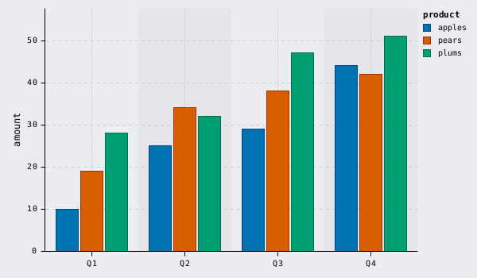
16.1.1 Style
The fill and outline used when nothing is mapped, the opacity of overlaid groups, and the 0 line drawn over mirrored bars (:mirror - Mirrored strips):
| Option | Type | Default | Description |
|---|---|---|---|
| :color | a clojure2d color | [69.0 117.0 180.0 255.0] | bar fill colour (a mapped :color wins) |
| :stroke-color | :darker or a clojure2d color or :none | :darker | outline colour: a colour, :none or :darker (the darkened fill) |
| :stroke-width | a non-negative number | 1 | outline width in pixels |
| :alpha | a number in [0 1] | 0.6 | fill opacity of overlaid groups sharing a level |
| :zero-line-color | a clojure2d color or :none | :black | colour of the 0 line drawn over mirrored bars |
| :zero-line-width | a non-negative number | 1 | width in pixels of the 0 line drawn over mirrored bars |
(def pyramid (for [[i age] (map-indexed vector ["0-19" "20-39" "40-59" "60-79" "80+"])
sex ["female" "male"]]
{:age age :sex sex :people (- 40 (* 7 i) (if (= sex "male") (* 2 i) 0))}))| age | sex | people |
|---|---|---|
| 0-19 | female | 40 |
| 0-19 | male | 40 |
| 20-39 | female | 33 |
| 20-39 | male | 31 |
| 40-59 | female | 26 |
| 40-59 | male | 22 |
| 60-79 | female | 19 |
| 60-79 | male | 13 |
| 80+ | female | 12 |
| 80+ | male | 4 |
(plot/render-image (plot/arrange [{:data sales
:mapping {:x :quarter :y :amount}
:charts [(chart/bar {:color [230 160 60] :stroke-color :black :stroke-width 2})]
:labels {:title "fill and outline"}}
{:data sales
:mapping {:x :quarter :y :amount :color :product}
:charts [(chart/bar {:position :overlay :alpha 0.35})]
:labels {:title ":overlay, :alpha 0.35"}
:legend false}
{:data pyramid
:mapping {:x :people :y :age :color :sex}
:charts [(chart/bar {:mirror :color :zero-line-color :red :zero-line-width 3})]
:scales {:y {:reverse true}}
:labels {:title "mirrored, red 0 line"}}]
{:columns 3 :widths [1 1 1.3]})
{:width 1000 :height 320})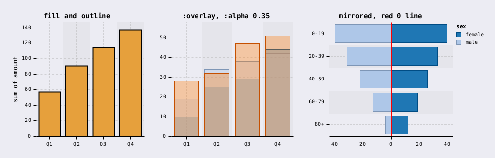
16.1.2 Bars
What a bar’s length is (:stat), how the groups of one level share its band, widths by the item’s size, the order of negative stacked parts, and the padding:
| Option | Type | Default | Description |
|---|---|---|---|
| :stat | one of :count :mean :median :percent :pmf :sum or a function | :sum | bar length from the item's rows: :sum, :mean, :median or a function of the values, or a count measure :count, :percent, :pmf (no values needed) |
| :position | one of :dodge :normalize :overlay :stack | :dodge when a level holds two or more groups, else :overlay | how groups of one level share its band: :dodge (side by side), :overlay (on top of each other), :stack or :normalize (stacked, each level summing to 1) |
| :zero-line | true or false or nil | true | draw the 0 line on top of mirrored bars (with :mirror only) |
| :varwidth | true or false or a keyword, a function or a categorical marker of one or nil | false | bar widths relative to the widest: true - by the square root of the count, a keyword or function of a row - by the item's sum of it |
| :negative-order | one of :forward :reverse | :forward | order of the groups below 0 with :stack: :forward (group order) or :reverse (the last group nearest 0) |
| :padding | map of one of :x :y to [lo hi], non-negative numbers | values 0.05, 0 at the baseline side the bars grow from | padding of the data span per position axis, {:x [lo hi] :y [lo hi]} fractions of the span (strip frame: :x the values) |
(plot/render-image (plot/arrange [{:data iris
:mapping {:x :species :y :sepal-length}
:charts [(chart/bar {:stat :mean})]
:labels {:title ":stat :mean"}}
{:data sales
:mapping {:x :quarter :y :amount :color :product}
:charts [(chart/bar {:position :stack})]
:labels {:title ":position :stack"}
:legend false}
{:data sales
:mapping {:x :quarter :y :amount}
:charts [(chart/bar {:varwidth :amount})]
:labels {:title ":varwidth :amount"}}]
{:columns 3})
{:width 1000 :height 320})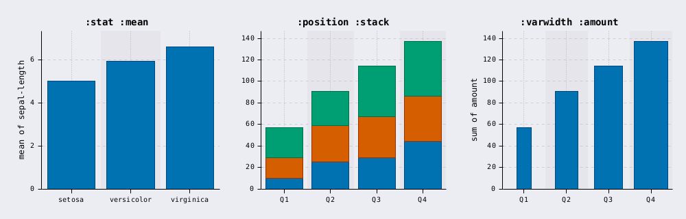
Every :stat: summaries of the mapped values (:sum - the default, :mean, :median) and counts of the rows, needing no values (:count, :percent of the panel’s rows, :pmf - shares summing to 1):
(plot/render-image (plot/arrange [{:data iris
:mapping {:x :species :y :sepal-length}
:charts [(chart/bar)]
:labels {:title ":sum (default)"}}
{:data iris
:mapping {:x :species :y :sepal-length}
:charts [(chart/bar {:stat :median})]
:labels {:title ":stat :median"}}
{:data mtcars-cyl
:mapping {:x (levels/categorical :cyl)}
:charts [(chart/bar {:stat :count})]
:labels {:title ":stat :count"}}
{:data mtcars-cyl
:mapping {:x (levels/categorical :cyl)}
:charts [(chart/bar {:stat :percent})]
:labels {:title ":stat :percent"}}
{:data mtcars-cyl
:mapping {:x (levels/categorical :cyl)}
:charts [(chart/bar {:stat :pmf})]
:labels {:title ":stat :pmf"}}]
{:columns 5})
{:width 1000 :height 280})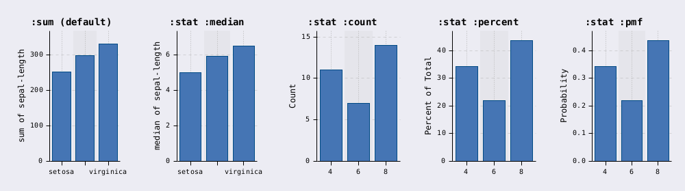
Groups side by side (:dodge, the default for several groups of a level) or stacked; with negative values a stack grows both ways from 0 - :negative-order :reverse puts the last group nearest 0 below it. Mirrored bars drop their 0 line with :zero-line false, and :padding widens the value axis (here 30% past the longest bar):
(def balance [{:month "Jan" :item "sales" :eur 40} {:month "Jan" :item "costs" :eur -25} {:month "Jan" :item "tax" :eur -8}
{:month "Feb" :item "sales" :eur 55} {:month "Feb" :item "costs" :eur -30} {:month "Feb" :item "tax" :eur -12}
{:month "Mar" :item "sales" :eur 35} {:month "Mar" :item "costs" :eur -20} {:month "Mar" :item "tax" :eur -6}])| month | item | eur |
|---|---|---|
| Jan | sales | 40 |
| Jan | costs | -25 |
| Jan | tax | -8 |
| Feb | sales | 55 |
| Feb | costs | -30 |
| Feb | tax | -12 |
| Mar | sales | 35 |
| Mar | costs | -20 |
| Mar | tax | -6 |
(plot/render-image (plot/arrange [{:data balance
:mapping {:x :month :y :eur :color :item}
:charts [(chart/bar {:position :dodge})]
:labels {:title ":position :dodge"}
:legend false}
{:data balance
:mapping {:x :month :y :eur :color :item}
:charts [(chart/bar {:position :stack :negative-order :forward})]
:labels {:title ":stack, :negative-order :forward"}
:legend false}
{:data balance
:mapping {:x :month :y :eur :color :item}
:charts [(chart/bar {:position :stack :negative-order :reverse})]
:labels {:title ":negative-order :reverse"}}]
{:columns 3 :widths [1 1 1.3]})
{:width 1000 :height 320})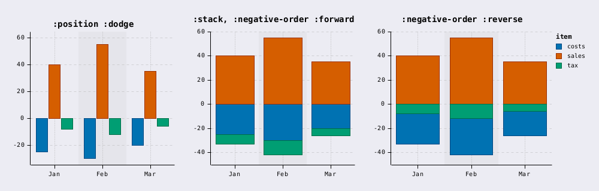
(plot/render-image (plot/arrange [{:data pyramid
:mapping {:x :people :y :age :color :sex}
:charts [(chart/bar {:mirror :color :zero-line false})]
:scales {:y {:reverse true}}
:labels {:title ":zero-line false"}
:legend false}
{:data sales
:mapping {:x :quarter :y :amount}
:charts [(chart/bar {:padding {:y [0 0.3]}})]
:labels {:title ":padding {:y [0 0.3]}"}}]
{:columns 2})
{:width 900 :height 300})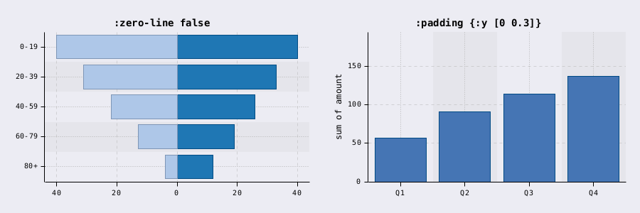
16.1.3 Labels
Each bar’s length written past its end or in its middle, formatted or as the text a function returns:
| Option | Type | Default | Description |
|---|---|---|---|
| :label-stack | one of :horizontal :vertical | along the bars: :horizontal for horizontal bars, :vertical for vertical ones | how the value and n texts of one label are joined: :horizontal (side by side) or :vertical (one above the other) |
| :value-label | true or false or a function or nil | false | write each bar's length (true) or the text a function of {:value :n :share :level :group} returns |
| :label-position | one of :end :center :outer | :center for :stack / :normalize, else :end | where labels sit: :end (past the bar's end), :center (in the bar) or :outer (polar only: past the outer radius) |
| :label-leader | true or false or nil | false | draw a line from the bar's outer edge to its :outer label |
| :value-format | a number format string or a function | whole numbers as integers, else the fewest digits telling the labels apart | text of the value labels: a format string or a function of the number |
(plot/render-image (plot/arrange [{:data sales
:mapping {:x :quarter :y :amount :color :product}
:charts [(chart/bar {:value-label true})]
:labels {:title ":value-label true"}
:legend false}
{:data sales
:mapping {:x :quarter :y :amount :color :product}
:charts [(chart/bar {:position :normalize :value-label #(format "%.0f%%" (* 100 (:share %)))})]
:labels {:title ":normalize, shares in %"}
:legend false}
{:data iris
:mapping {:x :species :y :petal-length}
:charts [(chart/bar {:stat :mean :value-label true :value-format "%.2f cm"})]
:labels {:title ":value-format"}}]
{:columns 3})
{:width 1000 :height 320})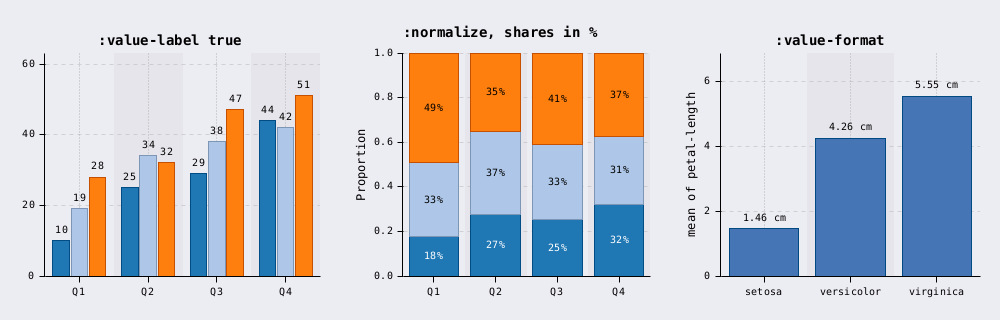
Where labels sit: past the bar’s end (:end, the default unstacked) or inside it (:center, the default stacked); with the value and the row count (:n-label) the two texts join side by side or one above the other (:label-stack):
(plot/render-image (plot/arrange [{:data iris
:mapping {:x :species :y :sepal-length}
:charts [(chart/bar {:stat :mean :value-label true :label-position :end})]
:labels {:title ":label-position :end"}}
{:data iris
:mapping {:x :species :y :sepal-length}
:charts [(chart/bar {:stat :mean :value-label true :label-position :center})]
:labels {:title ":label-position :center"}}
{:data iris
:mapping {:x :species :y :sepal-length}
:charts [(chart/bar {:stat :mean :value-label true :n-label true
:label-stack :horizontal})]
:labels {:title ":label-stack :horizontal"}}
{:data iris
:mapping {:x :species :y :sepal-length}
:charts [(chart/bar {:stat :mean :value-label true :n-label true
:label-stack :vertical})]
:labels {:title ":label-stack :vertical"}}]
{:columns 4})
{:width 1000 :height 300})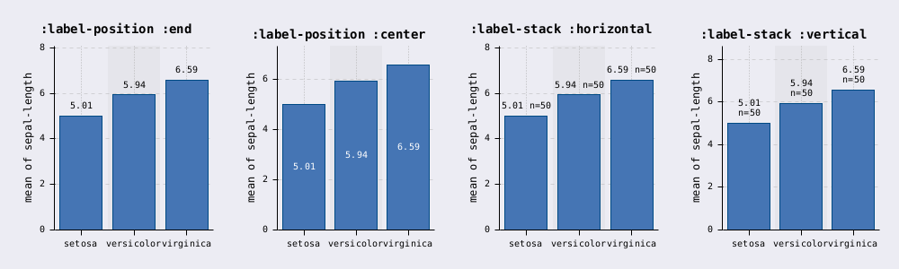
In a polar plot :outer puts the labels past the outer radius, with a leader line from each bar (:label-leader):
(plot/render-image (plot/arrange [{:data sales
:mapping {:x :quarter :y :amount}
:charts [(chart/bar {:value-label true :label-position :outer})]
:coord {:kind :polar}
:labels {:title ":label-position :outer"}}
{:data sales
:mapping {:x :quarter :y :amount}
:charts [(chart/bar {:value-label true :label-position :outer :label-leader true})]
:coord {:kind :polar}
:labels {:title ":label-leader true"}}]
{:columns 2})
{:width 800 :height 400})
Shared options: Fill patterns (:pattern :pattern-color); Data and mapping (:data :mapping); Named theme styles (:theme-style); Strip options (:place :width :thickness :dodge-gap :bottom-share :n-label :n-format :level-axis); Mirrored strips (:mirror); Rounded corners (:corner-radius :corner-radius-end).
16.2 extent
An interval per level (and group) from the item’s values - their range, a confidence interval, quantiles or a bootstrap estimate - with a mark at its centre.
| Option | Type | Default | Description |
|---|---|---|---|
| :x | a keyword, a function or a categorical marker of one or nil | values (data units) on the value axis, or levels for vertical intervals | |
| :y | a keyword, a function or a categorical marker of one or nil | levels on the categorical axis (absent - one interval), or values for vertical intervals | |
| :color | a keyword, a function or a categorical marker of one or nil | interval colour per group (gives legend keys) | |
| :shape | a keyword, a function or a categorical marker of one or nil | centre mark shape per group | |
| :size | a keyword, a function or a categorical marker of one or nil | centre mark size per group | |
| :group | a keyword, a function or a categorical marker of one or nil | groups without a visual aesthetic (dodged as other groups) |
(plot/render-image {:data iris
:mapping {:x :sepal-length :y :species}
:charts [(chart/extent)]
:scales {:y {:reverse true}}}
{:width 600 :height 280})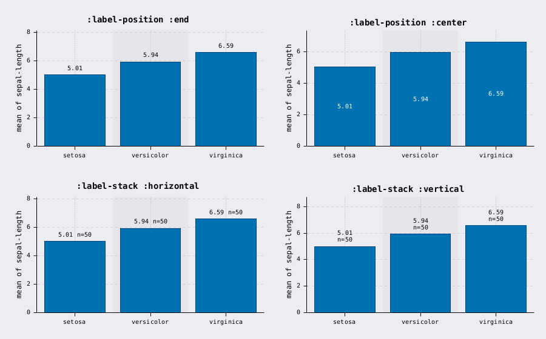
Its options: the interval’s and centre’s style, the method giving the interval (and its arguments), the bootstrap’s statistic and random generator (seeded here), the centre mark and the padding:
| Option | Type | Default | Description |
|---|---|---|---|
| :color | a clojure2d color or :none | [69.0 117.0 180.0 255.0] | interval colour (a mapped :color wins) |
| :line-width | a non-negative number | 2 | interval line width in pixels |
| :shape | a shape character, keyword or shape map | \O | shape of the centre mark (a mapped :shape wins) |
| :size | a non-negative number | 7 | size of the centre mark in pixels (a mapped :size wins) |
| :method | one of :adjacent :bootstrap-basic :bootstrap-bc :bootstrap-bca :bootstrap-mad-median :bootstrap-normal :bootstrap-percentile :bootstrap-studentized :bootstrap-t :ci :hpdi :inner-fence :mad :min-max :outer-fence :percentile :percentile-bc :percentile-bca :pi :quantile :sem :stddev or a function | :min-max | interval of the values: a fastmath extent or bootstrap method keyword, or a function of the values returning [lo hi] or [lo hi centre] |
| :statistic | a function or nil | fastmath mean | statistic of the values resampled by the bootstrap methods |
| :method-args | sequential of any value or nil | extra arguments passed to the method after the values (e.g. [10.0 90.0] for :percentile) | |
| :rng | a fastmath random generator or nil | a fresh generator every build | fastmath random generator of the bootstrap methods, copied per build (every build draws the same samples) |
| :center | one of :method :none | :method | centre mark: :method (the method's centre) or :none |
| :padding | map of one of :x :y to [lo hi], non-negative numbers | [0.05 0.05] along the value axis; with :place :bottom also :bottom-share below the data | padding of the data span per position axis, {:x [lo hi] :y [lo hi]} fractions of the span |
(plot/render-image (plot/arrange [{:data iris
:mapping {:x :sepal-length :y :species}
:charts [(chart/extent {:method :stddev :color [200 80 40] :line-width 4 :shape \s})]
:scales {:y {:reverse true}}
:labels {:title ":method :stddev"}}
{:data iris
:mapping {:x :sepal-length :y :species}
:charts [(chart/extent {:method :percentile :method-args [10.0 90.0] :center :none})]
:scales {:y {:reverse true}}
:labels {:title "10-90 percentiles, no centre"}}
{:data iris
:mapping {:x :sepal-length :y :species}
:charts [(chart/extent {:method :bootstrap-percentile :rng (r/rng :mersenne 3)})]
:scales {:y {:reverse true}}
:labels {:title "bootstrap mean"}}]
{:columns 3})
{:width 1000 :height 300})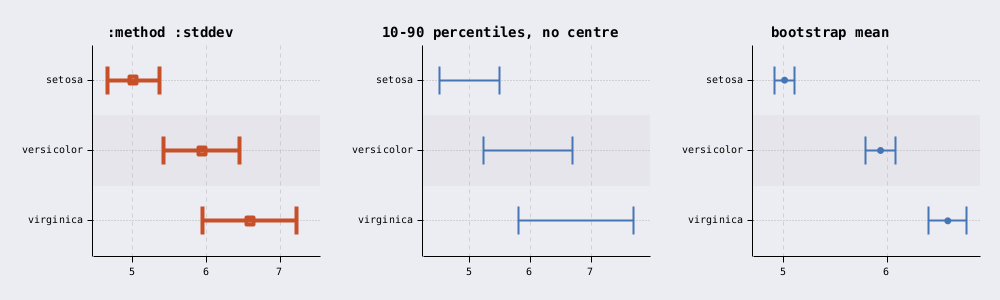
Every method on one sample (setosa sepal lengths), a level each: the range (:min-max), spreads around the mean (:stddev, :sem, :mad - around the median), quantile intervals (:percentile, :quantile, :pi, :hpdi, the bias-corrected :percentile-bc / :percentile-bca), Tukey’s whisker ends and fences (:adjacent, :inner-fence, :outer-fence), the mean’s confidence interval (:ci) and the bootstrap confidence intervals of the mean (:bootstrap-*, 500 resamples, seeded):
(def setosa (filter #(= "setosa" (:species %)) iris))| sepal-length | sepal-width | petal-length | petal-width | species |
|---|---|---|---|---|
| 5.1 | 3.5 | 1.4 | 0.2 | setosa |
| 4.9 | 3 | 1.4 | 0.2 | setosa |
| 4.7 | 3.2 | 1.3 | 0.2 | setosa |
| 4.6 | 3.1 | 1.5 | 0.2 | setosa |
| 5 | 3.6 | 1.4 | 0.2 | setosa |
| 5.4 | 3.9 | 1.7 | 0.4 | setosa |
| 4.6 | 3.4 | 1.4 | 0.3 | setosa |
| 5 | 3.4 | 1.5 | 0.2 | setosa |
| 4.4 | 2.9 | 1.4 | 0.2 | setosa |
| 4.9 | 3.1 | 1.5 | 0.1 | setosa |
| 5.4 | 3.7 | 1.5 | 0.2 | setosa |
| 4.8 | 3.4 | 1.6 | 0.2 | setosa |
| 4.8 | 3 | 1.4 | 0.1 | setosa |
| 4.3 | 3 | 1.1 | 0.1 | setosa |
| 5.8 | 4 | 1.2 | 0.2 | setosa |
| 5.7 | 4.4 | 1.5 | 0.4 | setosa |
| 5.4 | 3.9 | 1.3 | 0.4 | setosa |
| 5.1 | 3.5 | 1.4 | 0.3 | setosa |
| 5.7 | 3.8 | 1.7 | 0.3 | setosa |
| 5.1 | 3.8 | 1.5 | 0.3 | setosa |
| 5.4 | 3.4 | 1.7 | 0.2 | setosa |
| 5.1 | 3.7 | 1.5 | 0.4 | setosa |
| 4.6 | 3.6 | 1 | 0.2 | setosa |
| 5.1 | 3.3 | 1.7 | 0.5 | setosa |
| 4.8 | 3.4 | 1.9 | 0.2 | setosa |
| 5 | 3 | 1.6 | 0.2 | setosa |
| 5 | 3.4 | 1.6 | 0.4 | setosa |
| 5.2 | 3.5 | 1.5 | 0.2 | setosa |
| 5.2 | 3.4 | 1.4 | 0.2 | setosa |
| 4.7 | 3.2 | 1.6 | 0.2 | setosa |
| 4.8 | 3.1 | 1.6 | 0.2 | setosa |
| 5.4 | 3.4 | 1.5 | 0.4 | setosa |
| 5.2 | 4.1 | 1.5 | 0.1 | setosa |
| 5.5 | 4.2 | 1.4 | 0.2 | setosa |
| 4.9 | 3.1 | 1.5 | 0.2 | setosa |
| 5 | 3.2 | 1.2 | 0.2 | setosa |
| 5.5 | 3.5 | 1.3 | 0.2 | setosa |
| 4.9 | 3.6 | 1.4 | 0.1 | setosa |
| 4.4 | 3 | 1.3 | 0.2 | setosa |
| 5.1 | 3.4 | 1.5 | 0.2 | setosa |
| 5 | 3.5 | 1.3 | 0.3 | setosa |
| 4.5 | 2.3 | 1.3 | 0.3 | setosa |
| 4.4 | 3.2 | 1.3 | 0.2 | setosa |
| 5 | 3.5 | 1.6 | 0.6 | setosa |
| 5.1 | 3.8 | 1.9 | 0.4 | setosa |
| 4.8 | 3 | 1.4 | 0.3 | setosa |
| 5.1 | 3.8 | 1.6 | 0.2 | setosa |
| 4.6 | 3.2 | 1.4 | 0.2 | setosa |
| 5.3 | 3.7 | 1.5 | 0.2 | setosa |
| 5 | 3.3 | 1.4 | 0.2 | setosa |
(plot/render-image {:data setosa
:mapping {:x :sepal-length}
:charts (vec (for [m [:min-max :stddev :sem :mad :percentile :quantile :pi :hpdi :percentile-bc
:percentile-bca :adjacent :inner-fence :outer-fence :ci :bootstrap-normal
:bootstrap-percentile :bootstrap-basic :bootstrap-bc :bootstrap-bca
:bootstrap-studentized :bootstrap-t :bootstrap-mad-median]]
(chart/extent {:method m :rng (r/rng :mersenne 5)
:mapping {:y (constantly (name m))}})))
:scales {:y {:reverse true}}
:labels {:x "sepal length [cm]"}}
{:width 700 :height 600})
The bootstrap resamples the mean unless :statistic names another function - here the median; :center :method (the default) marks the method’s centre, here sized up with :size:
(plot/render-image (plot/arrange [{:data iris
:mapping {:x :sepal-length :y :species}
:charts [(chart/extent {:method :bootstrap-percentile :rng (r/rng :mersenne 3)
:center :method :size 12})]
:scales {:y {:reverse true}}
:labels {:title "bootstrap of the mean, :size 12"}}
{:data iris
:mapping {:x :sepal-length :y :species}
:charts [(chart/extent {:method :bootstrap-percentile :rng (r/rng :mersenne 3)
:statistic stats/median :size 12})]
:scales {:y {:reverse true}}
:labels {:title ":statistic stats/median"}}
{:data iris
:mapping {:x :sepal-length :y :species}
:charts [(chart/extent {:padding {:x [0.5 0.5]}})]
:scales {:y {:reverse true}}
:labels {:title ":padding {:x [0.5 0.5]}"}}]
{:columns 3})
{:width 1000 :height 300})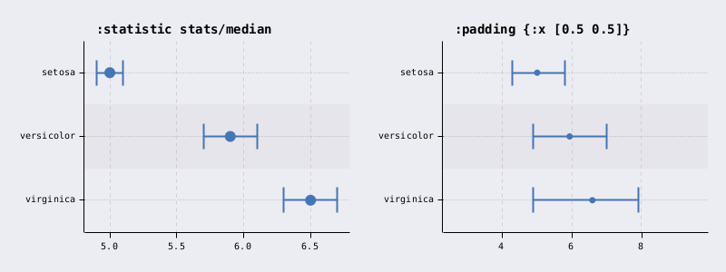
Shared options: Data and mapping (:data :mapping); Named theme styles (:theme-style); Strip options (:place :width :thickness :position :dodge-gap :bottom-share :n-label :n-format :level-axis); Mirrored strips (:mirror).
16.3 bullet
A measure bar over shaded qualitative ranges, with marker lines (targets) - a row per level holding vectors of ranges, measures and markers (here percents of a plan, so the levels share one axis).
| Option | Type | Default | Description |
|---|---|---|---|
| :ranges | a keyword, a function or a categorical marker of one or nil | qualitative ranges of a level: a number or a vector of them (one row per level and group) | |
| :measures | a keyword, a function or a categorical marker of one or nil | measures of a level: a number or a vector of them, the first the current value | |
| :markers | a keyword, a function or a categorical marker of one or nil | marker values of a level: a number or a vector of them | |
| :y | a keyword, a function or a categorical marker of one or nil | levels on the categorical axis (absent - one bullet) | |
| :x | a keyword, a function or a categorical marker of one or nil | levels of vertical bullets (values aren't read from it) | |
| :group | a keyword, a function or a categorical marker of one or nil | groups without a visual aesthetic (dodged as other groups) |
(def kpis [{:kpi "revenue" :ranges [60 80 100] :measures [92 75] :markers [95]}
{:kpi "profit" :ranges [50 75 100] :measures [68 60] :markers [80]}
{:kpi "customers" :ranges [70 85 100] :measures [88] :markers [90 96]}])| kpi | ranges | measures | markers |
|---|---|---|---|
| revenue | [60 80 100] | [92 75] | [95] |
| profit | [50 75 100] | [68 60] | [80] |
| customers | [70 85 100] | [88] | [90 96] |
(plot/render-image {:data kpis
:mapping {:y :kpi :ranges :ranges :measures :measures :markers :markers}
:charts [(chart/bullet)]
:scales {:y {:reverse true}}
:labels {:x "% of plan"}}
{:width 600 :height 260})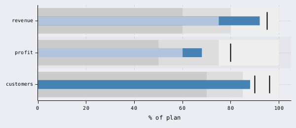
Its options: the shades of ranges and measures (from the first to the last), the measure bar’s width, the markers’ colour, width and length, and the padding (left: 20% past the largest value):
| Option | Type | Default | Description |
|---|---|---|---|
| :range-colors | [a clojure2d color or :none, a clojure2d color or :none] | [[204.0 204.0 204.0 255.0] [238.0 238.0 238.0 255.0]] | [first last] colours shading the ranges from the smallest to the largest |
| :measure-colors | [a clojure2d color or :none, a clojure2d color or :none] | [[70.0 130.0 180.0 255.0] [176.0 196.0 222.0 255.0]] | [first last] colours shading the measures from the first (the current value) to the last |
| :measure-fraction | a number in [0 1] | 0.35 | measure bar width, a fraction of the item slot |
| :marker-color | a clojure2d color or :none | :black | marker line colour |
| :marker-width | a non-negative number | 2 | marker line width in pixels (0 - no markers) |
| :marker-length | a number in [0 1] | 0.7 | marker line length, a fraction of the item slot |
| :padding | map of one of :x :y to [lo hi], non-negative numbers | values 0.05 on a side holding values, 0 on the side of 0 | padding of the data span per position axis, {:x [lo hi] :y [lo hi]} fractions of the span (strip frame: :x the values) |
(plot/render-image (plot/arrange [{:data kpis
:mapping {:y :kpi :ranges :ranges :measures :measures :markers :markers}
:charts [(chart/bullet {:measure-fraction 0.2 :marker-width 0 :padding {:x [0 0.2]}})]
:scales {:y {:reverse true}}
:labels {:title "thin, no markers, :padding {:x [0 0.2]}"}}
{:data kpis
:mapping {:y :kpi :ranges :ranges :measures :measures :markers :markers}
:charts [(chart/bullet {:range-colors [[255 230 200] [255 250 240]]
:measure-colors [[180 60 30] [230 150 120]]
:measure-fraction 0.6 :marker-color [30 30 160]
:marker-width 4 :marker-length 0.9})]
:scales {:y {:reverse true}}
:labels {:title "custom colours and sizes"}}]
{:columns 2})
{:width 900 :height 260})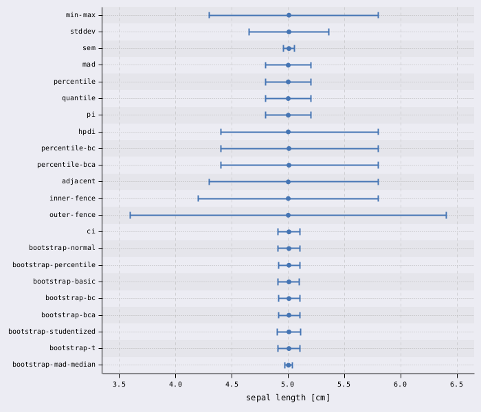
Shared options: Data and mapping (:data :mapping); Named theme styles (:theme-style); Strip options (:place :width :thickness :position :dodge-gap :bottom-share :level-axis).
source: notebooks/reference/charts_bars_ranges.clj